Anomaly 05-11 - gURLs Just Want to Have Fun - All Parts
Part 0
So we are given a history file from a browser. This is in a sqlite database foramt so i will open it up with my sqlite data viewer. 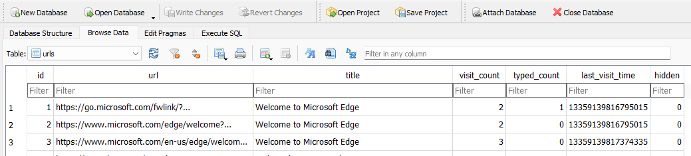 I am looking at the tables called urls for mast of the parts
Part 1
We are looking for a download so lets search for the word download 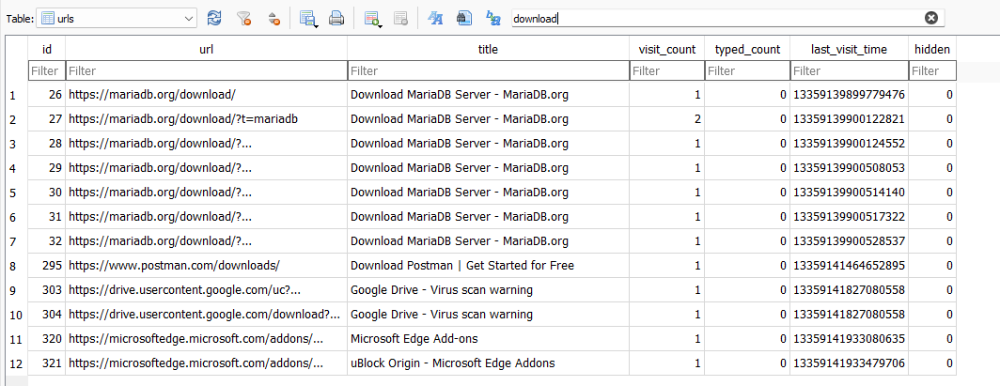 One entry catches my eye because in the title we see virus. Using the url as the flag we get https://drive.usercontent.google.com/download?id=1BfPZslNaHvz3olaV8_3I6ppA_IbdlHLr&export=download
Part 2
We are now looking for downloads so lets switch to the downloads table and see if we can find a quote. 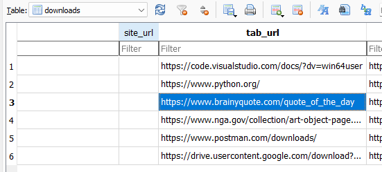 We see quote of the day site so now lets look at the url_charts table to see if we can get a full url 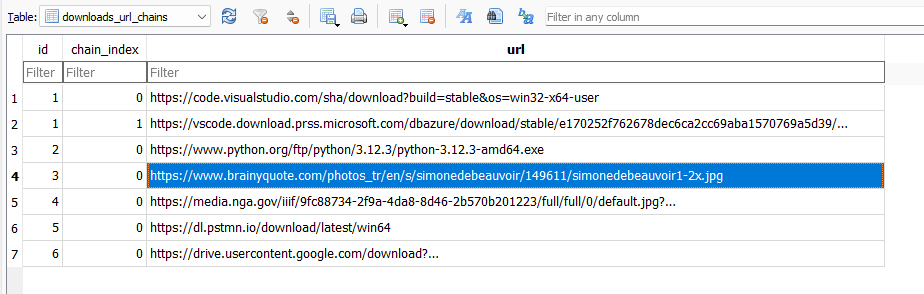 Putting that url into our browser we see the quote
Part 3
We are now looking for flights so we are back in the url table searching for flights 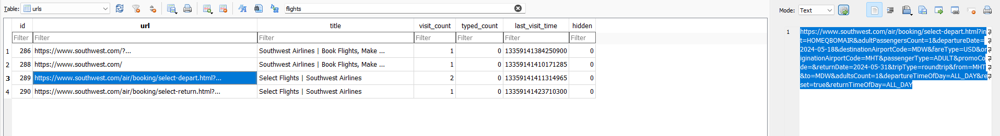 We see a southwest page we a too and from in the url request. 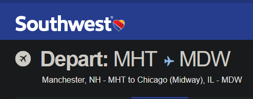 Checking it out shows us the state New Hampshire
Part 4
Searching for weather in the url table 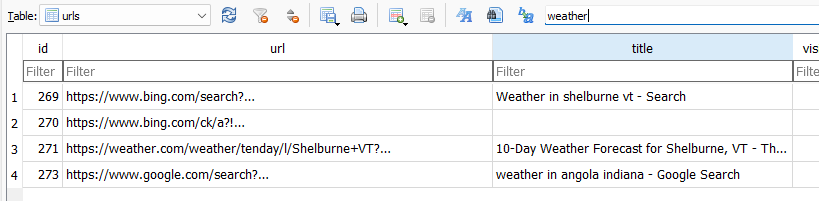 This shows us the city right in the title Shelburne
Part 5
Searching for github 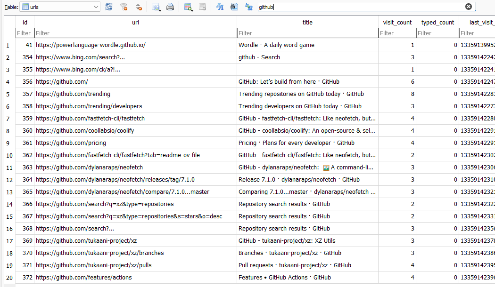 On this list the xz repo stands out to me since i know they had a big news piece. Looking up the CVE associated turns out to be the flsg
Part 6
This one again we are going to search for the title 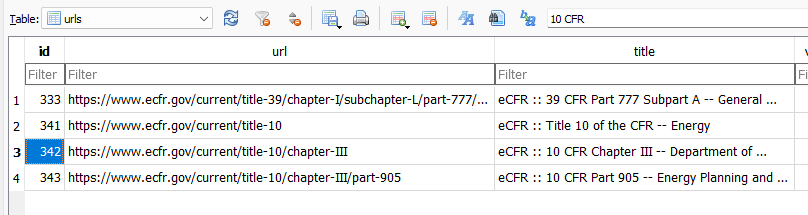 Taking note of the id we can look it up in the vists table. Putting the id for url 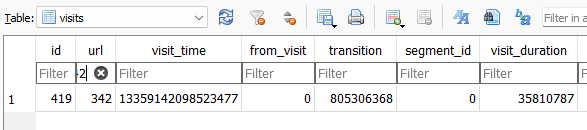
Part 7
We will search for art 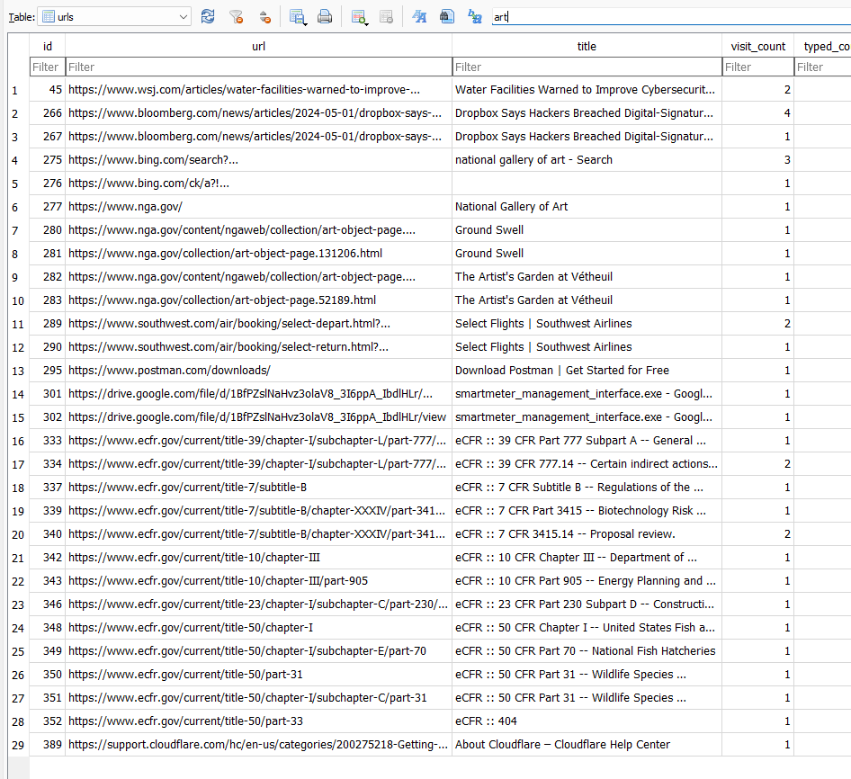 I notice one gov site stand out the national galary of art. 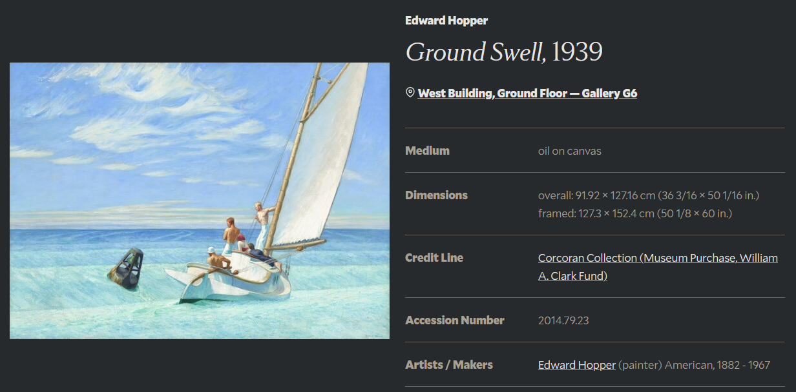 Going to the url of the painting that wasnt in the downloads table gives us the last name